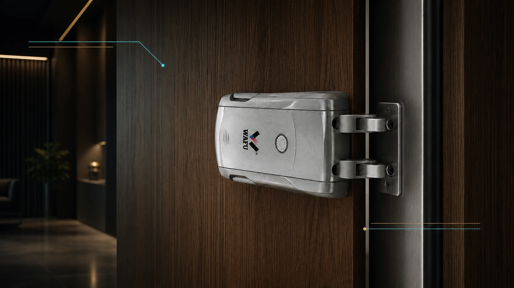
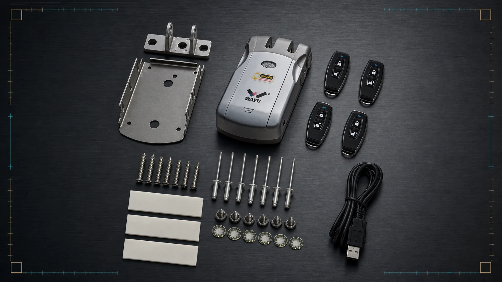

Uma cotação bem preparada reduz idas e vindas e permite validar instalação, configuração e entrega antes de emitir uma proposta.
Numa fechadura invisível, a primeira questão não é apenas o preço. Antes de comparar propostas, a equipa de compras deve descrever onde o corpo da fechadura será instalado, que aro receberá os pinos, que porta será usada para a amostra e que entrega o mercado-alvo exige.

1. Dados da porta que alteram a solução
Peça fotografias da folha e do aro, espessura, material, folga de borda, fechadura existente, sentido de abertura e acesso para manutenção. O corpo é montado horizontalmente na porta; a peça recetora é fixada ao aro. A amostra deve confirmar que os pinos do corpo entram alinhados nos furos do recetor, sem atrito nem adaptações improvisadas.
2. Quantidade, fase e objetivo da compra
Indique se o pedido é para amostra, exposição, projeto-piloto ou entrega por lotes. Registe quantidade por modelo, datas previstas, peças sobressalentes e se haverá embalagem OEM ou ODM. Uma quantidade sem fase de entrega não permite planear produção, ensaios nem suporte posterior.

3. Método de acesso e gestão de utilizadores
Defina comando, app, código, cartão ou outros métodos suportados antes de pedir cotação. Para arrendamento, escritórios ou projetos com várias portas, detalhe quem cria utilizadores, como o acesso é revogado e qual o percurso de abertura de emergência que deve ficar documentado.
4. Mercado, conformidade e documentação
Partilhe país de destino, idioma dos manuais, marcação, requisitos de importação e responsabilidade de instalação. A certificação aplicável, a rotulagem e a declaração de conformidade devem ser verificadas contra o modelo e a configuração reais; uma conversa comercial não substitui essa verificação.
5. A amostra deve validar o projeto, não apenas o acabamento
Instale uma amostra numa porta representativa. Registe modelo, versão, acessórios, alimentação, posição do recetor, força de fecho e método de abertura testado. Guarde fotografias, notas de instalação e aprovação da amostra como referência para a encomenda e para alterações posteriores.
6. Lista de dados para uma RFQ
Envie: fotografias e medidas da porta e do aro; mercado e utilização; quantidade e calendário; modelos preferidos; cor; métodos de acesso; requisitos de marca e embalagem; idioma dos documentos; necessidades de sobressalentes; e responsável pela instalação. Com estes dados, o fornecedor consegue responder com uma proposta verificável, não apenas com um valor isolado.
Peça uma revisão da RFQ
Partilhe fotografias da porta e do aro, mercado, quantidade prevista e método de acesso. A WAFU pode ajudar a organizar uma amostra e uma lista de verificação de compra.
Perguntas frequentes
Uma fotografia pode confirmar compatibilidade?
Não. As fotografias ajudam a preparar a análise, mas espessura, borda, alinhamento com o aro e percurso de emergência devem ser confirmados numa amostra representativa.
O que deve incluir um pedido de amostra?
A porta de teste, o método de acesso, acessórios, mercado e o resultado de instalação que se pretende validar.